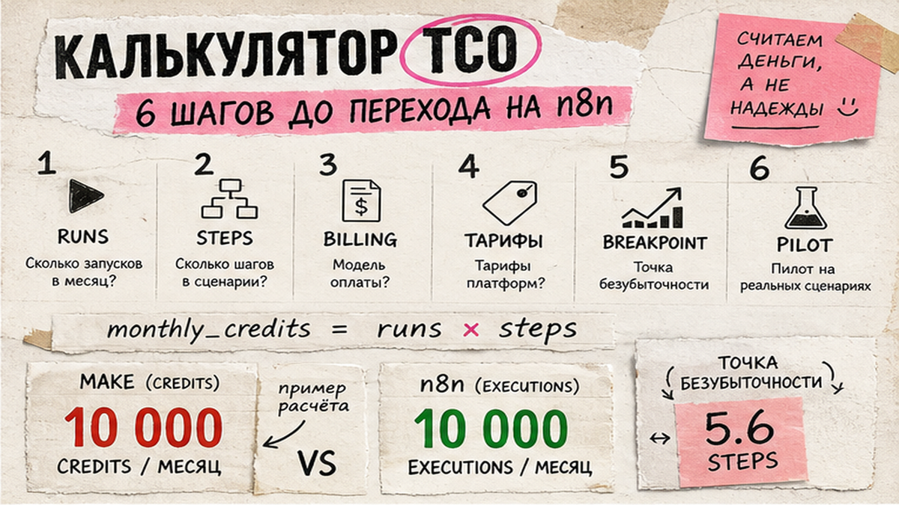
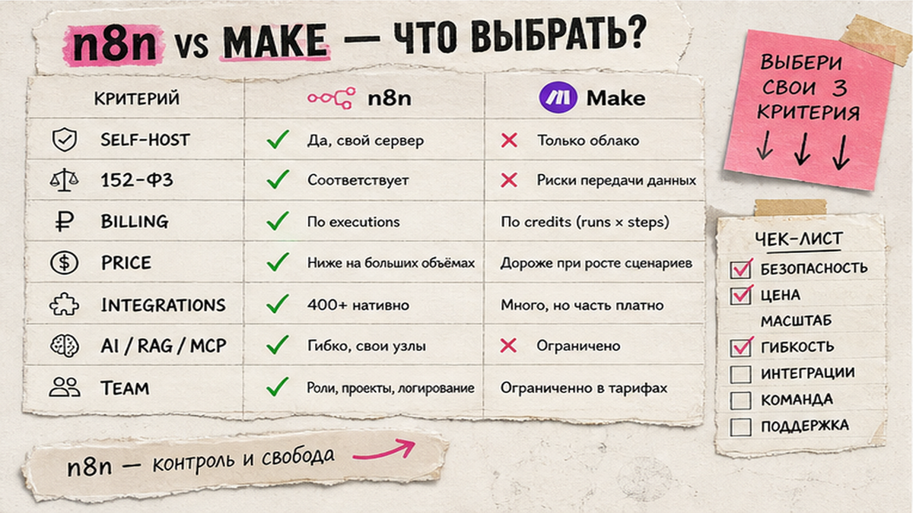
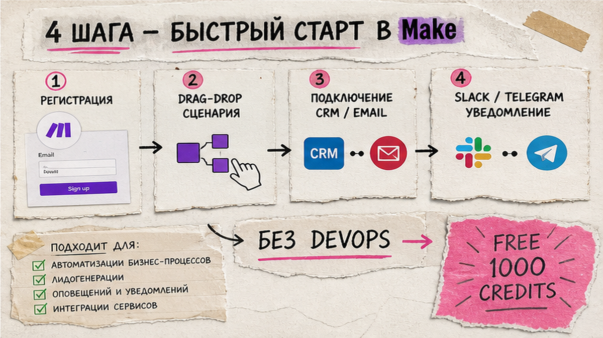

Вы сравниваете n8n и Make.com, открываете десять таблиц с ценами и всё равно не понимаете, что выгоднее на вашем объёме. Разница не в "лучше/хуже", а в том, как платформа считает деньги: Make списывает credits за каждый шаг сценария, n8n Cloud - за один execution (полный прогон workflow). Ниже вы пересчитаете TCO на своих цифрах, заполните таблицу сравнения и зафиксируете решение: Make, n8n Cloud, self-hosted n8n или гибрид - с обоснованием по 152-ФЗ, AI и бюджету.
TL;DR / Быстрый инсайт: Make выгоден для быстрого старта и типовых SaaS-связок на малых объёмах; n8n - когда нужны self-host, RAG, MCP и длинные пайплайны без доплаты за каждый шаг. Формула: Make credits ≈ runs × steps; n8n Cloud = runs (executions). Точка перелома - около 5,6 платных действий на один запуск: выше этого n8n Pro часто дешевле Make Core на 10 000 credits. С 27.08.2025 Make считает credits вместо operations; AI-модули там дороже обычных шагов.
В 2026 году обе платформы добавили AI-агентов, но биллинг не схлопнулся. Execution в n8n - один полный прогон сценария. Credits в Make - оплата за шаги (AI-модули дороже). Self-hosted - n8n на своём VPS/Docker, данные не в чужом облаке.

Без ваших цифр любое "n8n дешевле" или "Make удобнее" - пустой звук. Возьмите один типовой сценарий: например, заявка с сайта → CRM → уведомление в Telegram.
Делайте: считайте по самому тяжёлому сценарию, а не по "среднему по больнице". Не делайте: умножать шаги на executions для n8n Cloud - там платите только за runs.

| Критерий | n8n | Make.com |
|---|---|---|
| Self-host и 152-ФЗ | Community Edition на своём VPS; контроль локации данных (юридическую оценку - с юристом) | Только cloud SaaS; self-host недоступен. Данные на серверах Make |
| Billing | Execution = 1 полный прогон (шаги внутри бесплатны в лимите run) | Credits с 27.08.2025 (1:1 к operations); AI - динамическое списание |
| Цена входа (09.2026) | CE бесплатно + VPS ~$5-15; Cloud Starter 20 €/мес, 2 500 executions | Free 1 000 credits; Core $9/мес, 10 000 credits |
| Интеграции | 400+ native nodes + 600+ community | 1 500+ native apps |
| AI / RAG / MCP | AI Agent node, LangChain, vector stores, MCP Server Trigger | AI Provider / AI Toolkit; credits за tokens + ops |
| Команда | Нужен DevOps для self-host; Cloud проще | Регистрация за минуты, визуальный отладчик |
Итоговый вердикт по таблице: Make побеждает в скорости прототипа и числе готовых SaaS-коннекторов. n8n - в экономике длинных сценариев, compliance через self-host и глубокой AI-оркестрации. Подробнее про AI Agent node - в гайде автоматизация n8n.
Делайте: выпишите три критерия из таблицы, без которых проект не стартует (например, 152-ФЗ + RAG + бюджет). Не делайте: выбирать платформу только по числу интеграций - решает ваш стек CRM и мессенджеров.

Make - только облако: регистрация и drag-and-drop, прототип часто на 40% быстрее за счёт визуального отладчика. Подходит, когда:
Делайте: начните с Make Free и одного pilot-сценария. Не делайте: строить на Free продакшен с тремя активными воронками - лимит 2 active scenarios.
n8n силён там, где Make начинает "сжигать" credits или упирается в отсутствие self-host.
Делайте: trial Cloud (1 000 executions без карты) перед VPS. Не делайте: self-host без 2-4 часов в месяц на обновления.
Схема гибрида 2026:
Триггер в Make (форма, CRM, рекламный кабинет) → HTTP/Webhook в n8n → AI/RAG/обработка файлов → ответ webhook обратно в Make → уведомление менеджеру
Маркетинг на Make, тяжёлые пайплайны и чувствительные данные - в self-hosted n8n. Миграция: webhook-триггер, повтор модулей 1:1, отключение старого scenario.
Делайте: документируйте, какой сценарий где живёт, в одной таблице. Не делайте: дублировать одну и ту же логику на двух платформах без мониторинга - расходы удвоятся незаметно.
Ответьте "да/нет" и подсчитайте: больше "да" в блоке Make - берите Make; в блоке n8n - n8n или self-host.
Вопросы 1-6 - n8n; 7-11 - Make; 12 - гибрид. Зафиксируйте: "Платформа X, тариф Y, потому что Z". Без DevOps - старт на курсе Make.com (5 800 ₽/мес, 159+ уроков), там же разбираем связку с n8n.
Обсуждение кейсов и разбор сценариев - в Telegram Ковчег.
Материал проверен: Артур Хорошев (CEO Maya AI, автор курса по Make.com).
Достоверность данных: тарифы n8n.io/pricing и help.make.com/credits сверены 07.09.2026; семантика запроса "n8n или make" - экспертная оценка редакции (точные показы Wordstat будут добавлены после восстановления API).
n8n считает деньги за полный прогон сценария (execution) и умеет self-host; Make считает credits за шаги в облаке и быстрее стартует без сервера. Выберите по формуле runs × steps и требованиям к данным.
До ~5 шагов на run и без self-host - Make Free или Core. Если нужен контроль данных или сценарии длиннее 6 шагов - n8n Cloud trial или Community Edition на VPS за $5-15/мес.
RAG, LangChain, vector stores и MCP - зона n8n. Make подойдёт для простых GPT-модулей в CRM-воронке; закладывайте дополнительные credits на AI Toolkit.
Да: Make ловит триггеры из SaaS, n8n обрабатывает тяжёлый AI и файлы через webhook. Документируйте границу, чтобы не платить дважды за одну логику.
С 27.08.2025 billing unit - credits (1:1 к operations). AI-модули списывают динамически. Пересчитайте сметы по runs × steps.
Нужен Docker на VPS и HTTPS. Иначе берите n8n Cloud или Make - pilot займёт часы, а не недели.